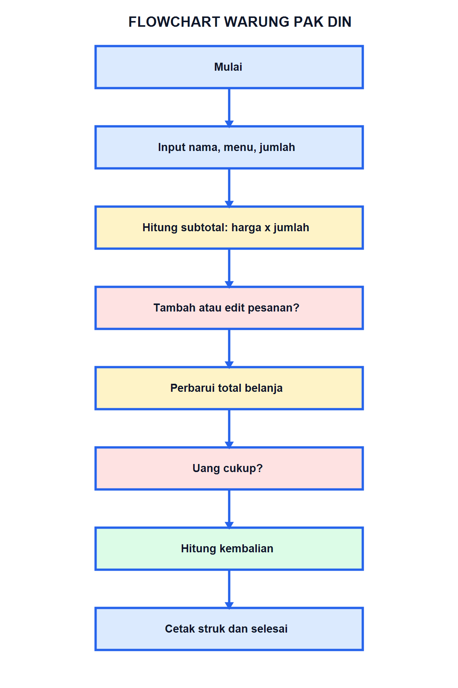

06 / Flowchart
Logika program dalam satu peta.
Diagram ini menunjukkan input, proses, keputusan, perulangan pembayaran, dan output.

Cara membaca
Panah biru menunjukkan urutan. Bentuk keputusan bercabang ketika
kondisi belum terpenuhi, lalu kembali ke input pembayaran. Ini
adalah contoh REPEAT UNTIL.